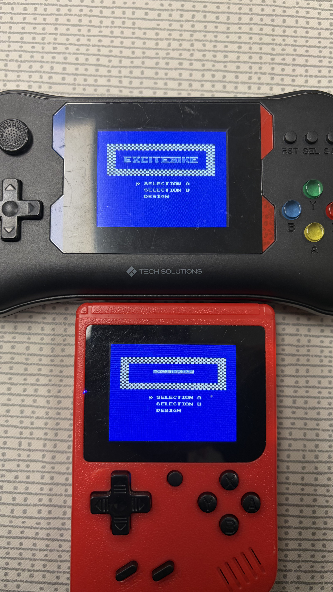
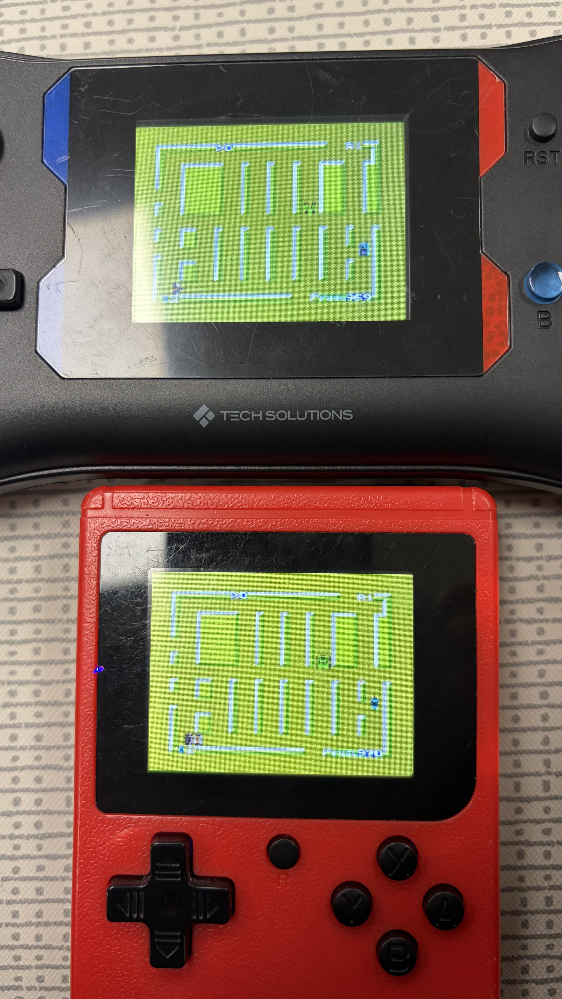
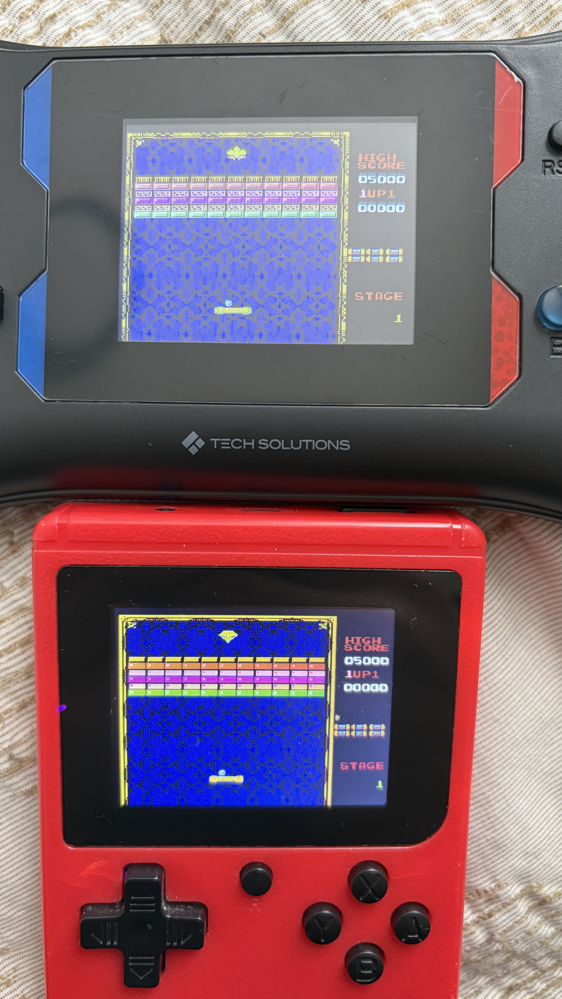
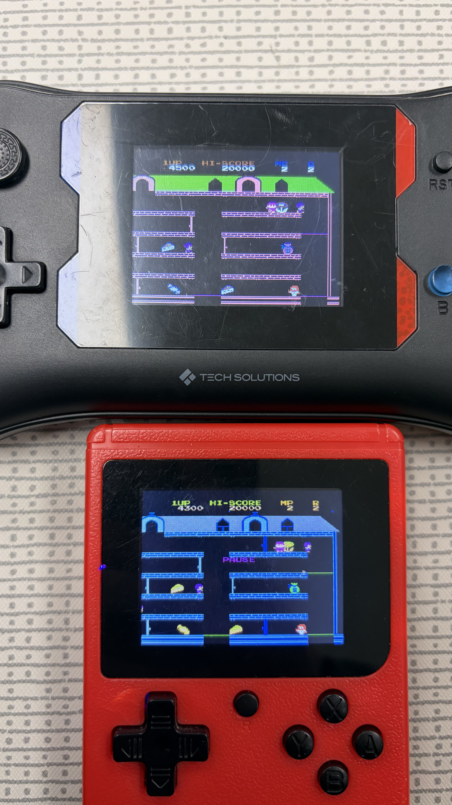

Just in time for the holidays, Five Below has recently added some new video game consoles on store shelves. Heres what the new game console looks like.
The system is called the "Tech Solutions Portable Gaming Console" Released by the company Merkury Innovations which are know for releasing various tech products from Mini space projectors to Bluetooth Headphones. Merkury Innovations has had game consoles sold at Five Below before back in 2022 to present with their Arcade Fun Handhelds which were handhelds that looks like the GameBoy Pocket.

This handheld contains a few things.
The Tech Solutions Portable Gaming Console is a handheld Famiclone, meaning that it runs a NES clone system on a chip containing a ROM with 200 Games Built in.
If there is one thing you need to know about these type of devices is that the company or manufacutrer thats producing these handhelds do not have the rights or permission to produce any of these copyrighted games and this system is no exception as it contains various copyright infringing games like Ninja Turtles 1, ExciteBike, Snow Bros, Pika Chu (which is a tetris clone but its Pokemon themed), Popeye, etc.
Despite the fact that the game menu says 200 in 1, There is only about 138 Games built into the system with the remaining games being repeats which is something that several multicarts and handhelds have.
The handheld reuses the same game list that are on the other Arcade Fun Handhelds with the games having minor changes

On their previous handheld, The original ExciteBike title screen as been replace with a plain text saying "EXCITEBIKE" but with the new game console, the title screen remains the same.

On the previous Arcade Fun Handheld, the handheld uses a hacked version of Route-16 known as Route-16 MOTO which replaces the car with a Motorcycle and replacing collectable objects with system icons from Windows OS. The new game handheld uses the original Rom of Route-16 Turbo.

Diamond (which is a clone of Arkanoid made by Nice Code) uses different graphics on the new game handheld.

On the new game handheld, the game Bounce (A hack of Mappy by Inventor) has a color palette issue on the new console unlike the Arcade Fun handheld.
On the previous Arcade Fun handhelds, there is a hidden game called Hexapod which is a modified variant of Nice Code's nes port of an intellivision game called "Buzz Bombers", the new game handheld appears to have removed that game.
The overall form factor of this handheld is a variant of the X7M Handheld that you can find online on sites like TEMU.
Overall it is not a terrible handheld but there are better ones you can get online if you are someone that wants to own a handheld famiclone. The Directional Pad isn't that great and it's to control some games mainly Shooter games but the thumbstick that this sytem does make the game slightly less hard to navigate but even that is not the best thumbstick to use. I think you are better off buying a switch 2 but if you want some retro gaming fun then this isn't a terrible option but i think there are better retro gaming systems that are probably more worth playing.
Return to home page